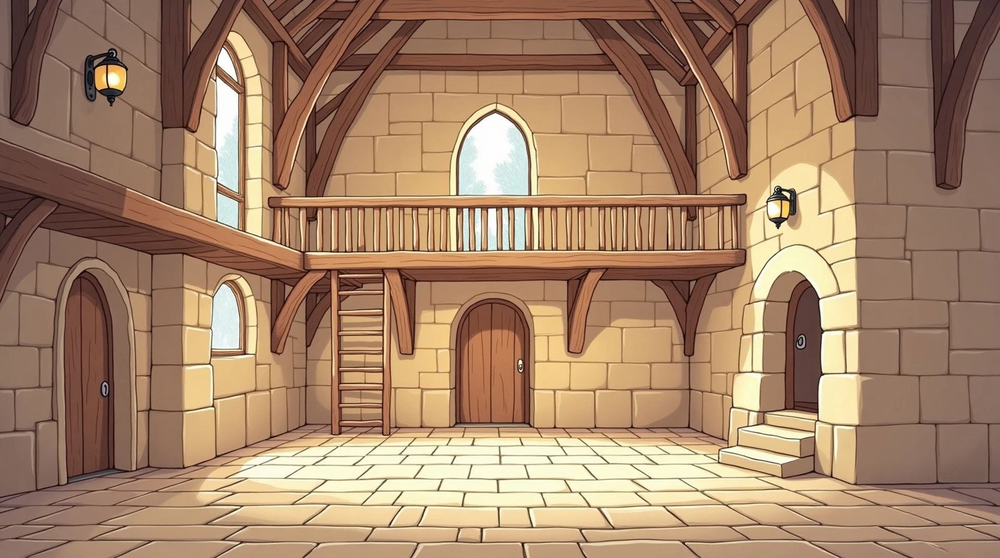

 THE WIZARD'S WORKSHOP
a point-and-click corner of jakethewizard.com
THE WIZARD'S WORKSHOP
a point-and-click corner of jakethewizard.com

THE WIZARD'S WORKSHOP
a point-and-click corner of jakethewizard.com
Talk to the wizards. Peer into the orb. Open the Arcanum door, and pocket what glints.
Or take the plain road — the classic site is one click away.
The Workshop is a wide point-and-click scene — it shines on a laptop or desktop. On your phone, the classic site has everything in a clean, tappable layout.